MG Marg
Clean, walkable main street lined with shops, restaurants and cafes.
Gangtok blends clean streets, urban cafes, Himalayan views and Buddhist monasteries. It is the base for exploring Sikkim’s major attractions including Tsomgo Lake, Nathula Pass and Harbhajan Baba Temple.
MG Marg is fully pedestrian-only and ideal for relaxing walks, food and shopping. Day trips from Gangtok cover lakes, ropeways and scenic viewpoints easily.
Clean, walkable main street lined with shops, restaurants and cafes.
One of Sikkim’s largest monasteries with courtyard rituals and quiet trails.
High-altitude glacial lake with dramatic mountain scenery.
Short cable car ride with panoramic views over the city.
Pedestrian street with stores, cafes and night ambience.
Large monastery with prayer halls, art and quiet hillside views.
Simple cable-car ride offering wide views of the city and mountains.
Easy starting point for all Sikkim routes.
Short visit
Relaxed
2–4 days
Walkable area with shops and food options.
Best for first-timers.
Quieter residential zone with mountain-facing hotels.
Great for views.
Budget-friendly stays with easier parking and wider roads.
Good for long stays.

 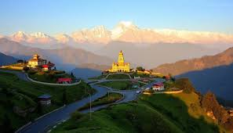
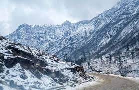
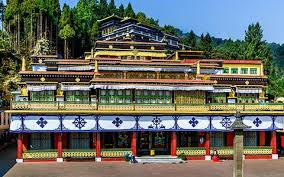
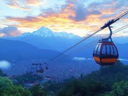
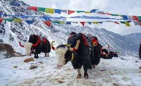
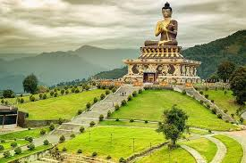
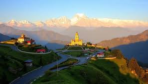
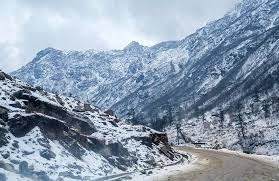
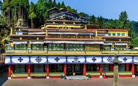
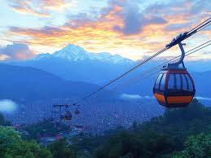
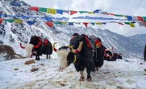
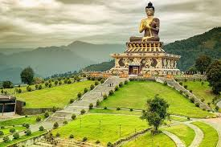
For transport, weather and permits.